この動画で伝える一文
「AIを使うと頭を使わなくなる」と思っている人に、慣れた仕事をAIへ渡した分、未経験の領域で以前より頭を使っている（頭を使う場所が移った）ことを伝え、「怖いけれど、頭を使うのは楽しい」という気持ちを残す。
| 役割 | 内容 | カット |
|---|---|---|
| 主張 | 頭を使う場所が、移った。以前より頭を使っている。 | 02・09 |
| 根拠 | インフラ・技術選定・営業・コンサル・コンテンツ制作など、やってこなかった仕事を自分でやる立場になった。AIの「これで良いですか？」に答えるため、どう動くか・なぜか・問題ないかを調べている。 | 04・06・07・08 |
| 留保 | コードを読まなくなった・慣れた仕事は手がかからない（頭を使わなくなった部分はある）。保守を考えれば下手に変えないほうがいい。これは筆者自身の実感で、全員への保証ではない。 | 03・05（声と文字の両方で残す） |
| 最後に残す本人の結論 | 「怖いですよ。でも、頭を使うのはめちゃくちゃ楽しい。」（原稿の締めの言葉）。06 の「これで良いですか？」は AI からの途中の問いで、結論ではない。 | 10 |
冒頭（01「AIを使うと、頭を使わなくなる。」→02「以前より、頭を使っている。」）と最後（09「頭を使う場所が、移った。」→10「怖いですよ。でも、頭を使うのはめちゃくちゃ楽しい。」）だけで主張が伝わることを確かめた。尺が足りなければ 05 から削る。
声・文字・素材動画の分担
| 担当 | 受け持つこと | 受け持たないこと |
|---|---|---|
| 声（ナレーション案） | 理由と経緯の文。「なぜ以前より頭を使うのか」「なぜ怖いのか」を文で運ぶ。 | 画面の語の繰り返し読み。全文字幕は付けない。 |
| 文字（キネティックタイポグラフィ） | 思い込み・反転・主張・留保・結論の短い語。2 つの円（慣れた／未経験）の大きさの逆転で因果を見せる。 | ナレーションの全文。 |
| 素材動画（AI 生成の実写調） | 未経験の領域の「広さ」、爆速の「速さ」と足元の不安、最後の「明るくなった床」の開放感。体で感じる部分。 | 論理や比較（それは円と文字が担う）。本人の記録映像に見せること。 |
ナレーションの有無は未確定。声を使わない場合、03・05・08 の理由の文を画面に足す必要があり、各カットを 2〜3 秒延ばす。ナレーション案は音声生成の許可ではない（声の生成は明示依頼のあと制作側）。
企画側が渡すもの／制作側が判断・制作するもの
| 企画側（この PR） | 制作側 |
|---|---|
主張・画面文言・カット構成・動きの狙い・完成条件（本書）／絵コンテ 22 コマ assets/storyboard/／採用済み素材動画 3 本の実ファイル・役割・置き場所・使用区間（本書「素材動画」）と、色合わせの基準画像 assets/reference/／エンドロゴ assets/logo/okady-work-logo.svg／根拠表 references.md／効果の検討記録 effects-direction.md | キネティックタイポグラフィとモーショングラフィックスの実装（three.js 推奨、使わない場合は理由を制作報告に）／素材動画の切り抜き・色合わせ（y30）・速度調整・合成／文字のはみ出し・重なりの機械検査（全カット 0.25 秒ごとの外接矩形、安全域 左右40px・上下30px。20261021 の video/render.mjs check を流用可）／BGM・効果音・（明示依頼後の）ナレーション／書き出しと等速での確認 |
assets/footage/ に同梱。下記の使用区間・切り取りで制作に使用する。音声と本編の実装・編集は制作側が担当する。記号と色（1 記号＝1 意味）
| 記号・色 | 意味 | カット |
|---|---|---|
| 紙色 #fbf8f1・墨 #1e2430 | 地と本文（明るい画面） | 全編 |
| 灰 #8c93a0 の円 | 慣れた領域（手放したもの） | 03・04・09 |
| 橙 #e87800（円・点・線・語） | 未経験の領域＝頭を使う場所。ランプの暖色と同じ系統 | 02・04・05・08・09・10 |
| 青 #2f6fe4（矢印・吹き出し） | AI（渡す先・AI の問い） | 03・06 |
| 朱 #e8452c | 恐怖・責任（「知らん。」「恐怖も爆速で」） | 06・07 |
| 白い角丸の札 | 素材動画の上に載せる文字の台（読ませるための面。意味は持たせない） | 04・05・08・10 |
| ライム #d2ff1a | エンドロゴの背景のみ | 11 |
決めたこと
- 暗い部屋の案と、ライトカラーの規則：素材動画は「暗い部屋」ではなく薄暗い曇り空ほどの明るさの灰色の部屋として作る（最暗部は中間の灰、黒に潰さない、低コントラスト）。さらに素材動画は紙色の画面の中の窓（円・字形・角丸）に置き、ページと構図はライトカラーのまま保つ。全面になる 04 の終わりも紙色の余白 40px を残す。絵コンテと参照画像もこの明るさで作った。
- 素材動画を作る前提：ユーザーの指示により、AI 生成の実写調素材動画を 3 本作る前提で企画する（モーショングラフィックスだけの代案に戻さない）。AGENTS.md の「動画 AI は人物の動きなどに限る」とは異なるが、今回はユーザーの明示指示を優先した。採用済みの実ファイルを使用し、制作側では再生成しない。
- 3 本の一貫性：同じ部屋・同じ木の机・同じ真鍮のランプ・同じ床タイル・同じ光（暖かい白と淡い灰）。共通のスタイル参照画像 1 枚をすべてのツール・素材に渡す。色のずれは制作側が y30（基準の画に色をそろえる）で合わせ、基準は
common_room-lamp_style-ref.webp。 - 「これで良いですか？」の位置：06（中盤）に AI の問いとして置き、Dolly in で視聴者へ迫らせる。結論は 10 の本人の肯定。
- 3D：使わない。09 の比較は平面の 2 円で足りる。three.js は画面全体のカメラ（寄り・回転）の実装手段として推奨（制作側の裁量）。
- 動画素材の扱い：一般的なイメージ映像であり、筆者の仕事場の記録ではない。画面に「実際の映像」と誤認させる文言を載せない。他者の作品（記事中の制作会社の動画を含む）は使わない。
- 章表示の帯・テロップ帯・最後の出典表示は入れない。
カット表・絵コンテ
各カットに「はじめ」「おわり」の 2 コマと間の動きを書いています。コマ画は構図のラフで、完成映像の躍動感を確かめたものではありません。素材動画の部分は構図を伝える線画ラフです。実際に使用する映像は下記「素材動画」の採用ファイルを参照してください。秒数・位置・大きさは参考値で、実装の手順とパラメータは制作側の裁量です（画面全体を大きく動かすこと、可読性、留保は緩めない）。
AIを使うと、頭を使わなくなる。
0:00–0:08 / 約8秒 ・ 導入（思い込み）

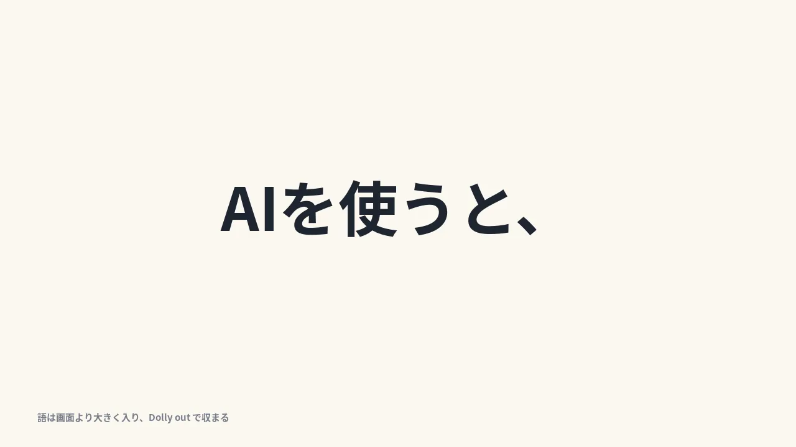

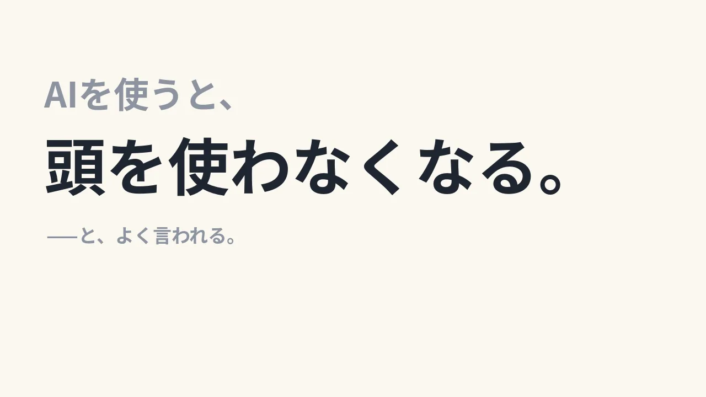
AIを使うと、
頭を使わなくなる。
——と、よく言われる。
AIを使うと頭を使わなくなる。そう思っている人は、かなり多いのではないでしょうか。
声 41字 ／ 画面 27字
はじめ：中央・一語の点の重心。おわり：左上の横組み 3 段、重心は左上。
語の塊ごとに行マスクで入り、画面全体は Dolly out しながら右へ Truck。最後に「頭を使わなくなる。」へ水平の取り消し線が走り始め、そのまま 02 へ渡す。
主役は「頭を使わなくなる」。思い込みとして提示するだけで、否定は 02 で行う。
以前より、頭を使っている。
0:08–0:15 / 約7秒 ・ 反転（本人の実感）

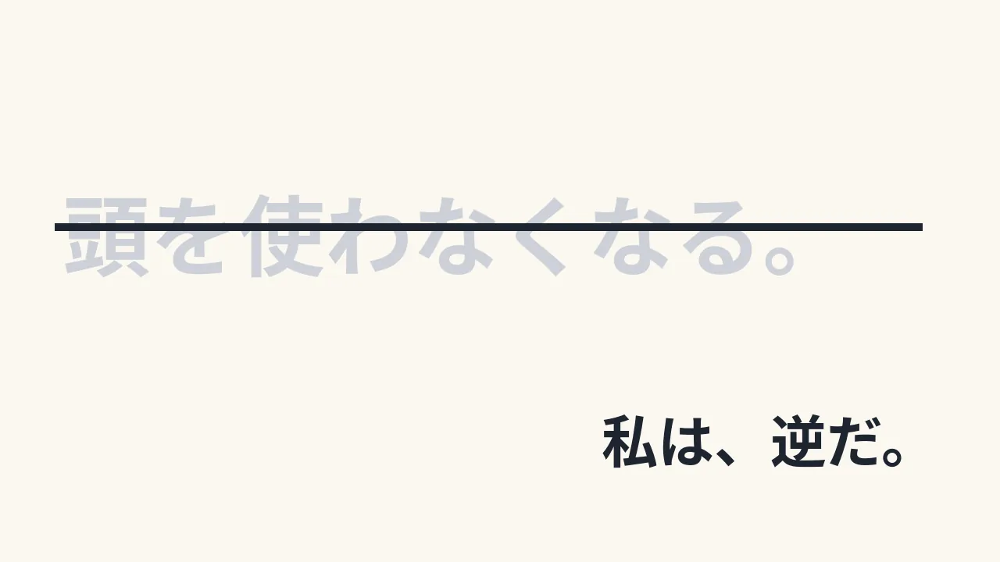

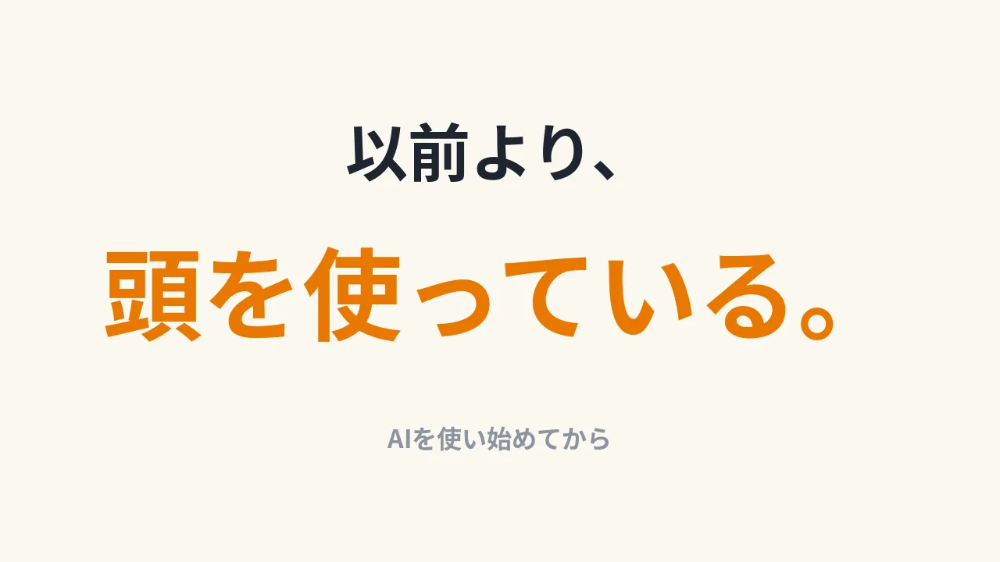
私は、逆だ。
以前より、
頭を使っている。
AIを使い始めてから
私自身の実感は、まったく逆です。AIを使い始めてから、以前よりずっと頭を使うようになりました。
声 47字 ／ 画面 29字
はじめ：左上の灰の文＋右下の黒。対角の重心。おわり：中央揃えで橙の 1 行が横幅いっぱい。
取り消し線が引かれた瞬間、画面全体が 90° Roll して 01 の文が床へ倒れ、下から 02 の文が起き上がる（構図の組み替え）。「頭を使っている。」は行マスクで入り、軽い Push in を続けて 03 の円へ寄る。
橙＝頭を使う場所 の色をここで初めて出す。
手放したものは、ある。
0:15–0:25 / 約10秒 ・ 留保（手放したもの）

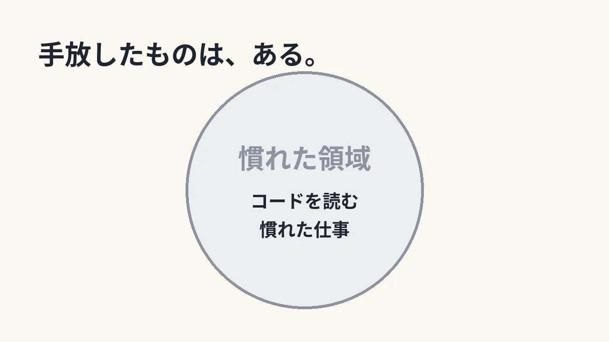

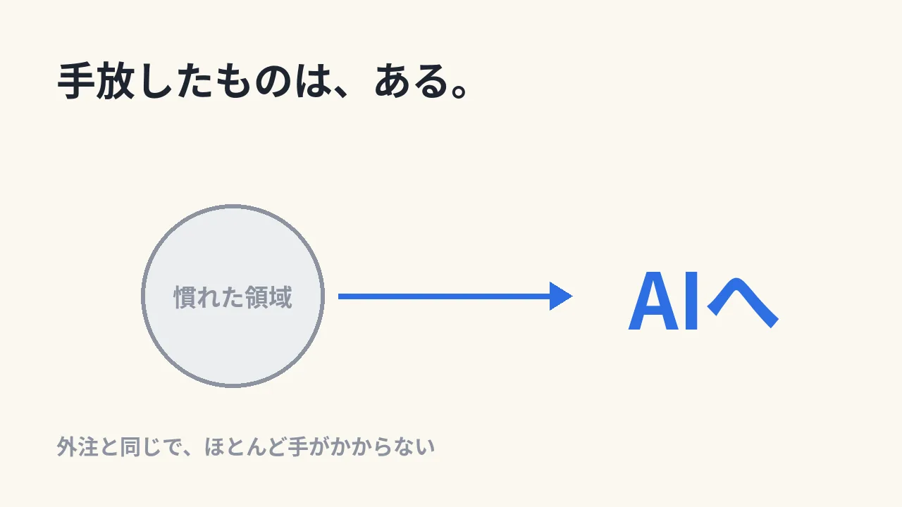
手放したものは、ある。
慣れた領域
コードを読む
慣れた仕事
AIへ
外注と同じで、ほとんど手がかからない
もちろん、手放したものはあります。ソースコードは本当に読まなくなったし、慣れた仕事はAIに渡せば、外注と同じでほとんど手がかかりません。
声 68字 ／ 画面 48字
はじめ：中央の大きな円（面の重心）。おわり：左の小円・矢印・右の大きな語で横の流れ。
円の中の 2 語が順に青い矢印に吸われて右へ流れ、そのたびに円が縮む（語が抜けると円が縮む＝因果）。画面全体はゆっくり左へ Pan。縮んだ円を残したまま 04 へ。
留保を声と文字の両方で残す（「頭を使わなくなった部分はある」）。
その分、未経験が来た。
0:25–0:36 / 約11秒 ・ 転換（未経験の領域）★素材動画

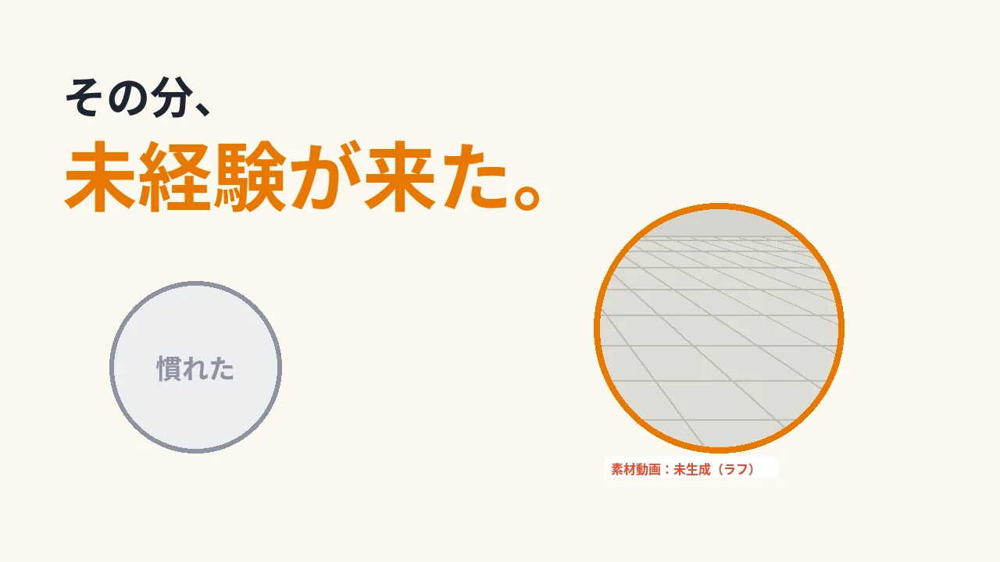

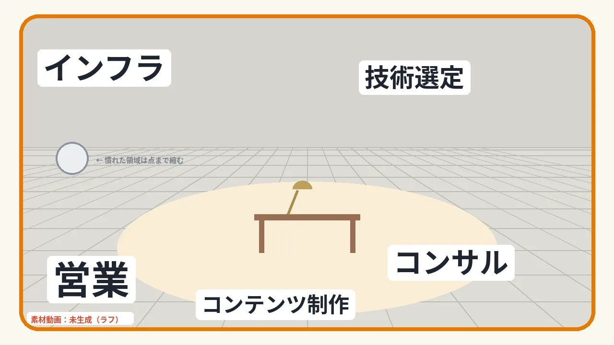
その分、
未経験が来た。
インフラ
技術選定
営業
コンサル
コンテンツ制作
その代わり、これまでやってこなかった仕事が一気に増えました。インフラも、技術選定も、営業も、コンサルも、コンテンツ制作も。
声 61字 ／ 画面 32字
はじめ：左に文字、右に円の窓（左右の二分）。おわり：画面いっぱいの窓の上に、大きさの違う 5 語が散る（周縁の重心）。
「未経験」の円＝素材動画を切り抜く窓（s18 の字・形の中に動画）。窓が膨らむのと同時に素材の中で Crane up が進み、床が 1 枚ずつ明るくなる。5 語は大きさを変えて四隅から入り、窓の拡大に押されて外へ流れる。最後に画面全体が右へ Whip pan し 05 へ。
素材動画 F1 を使う。慣れた円（灰）と未経験の円（橙）の大きさの逆転が、このカットの主役。
あえて、慣れていないほうへ。
0:36–0:46 / 約10秒 ・ 選択と留保

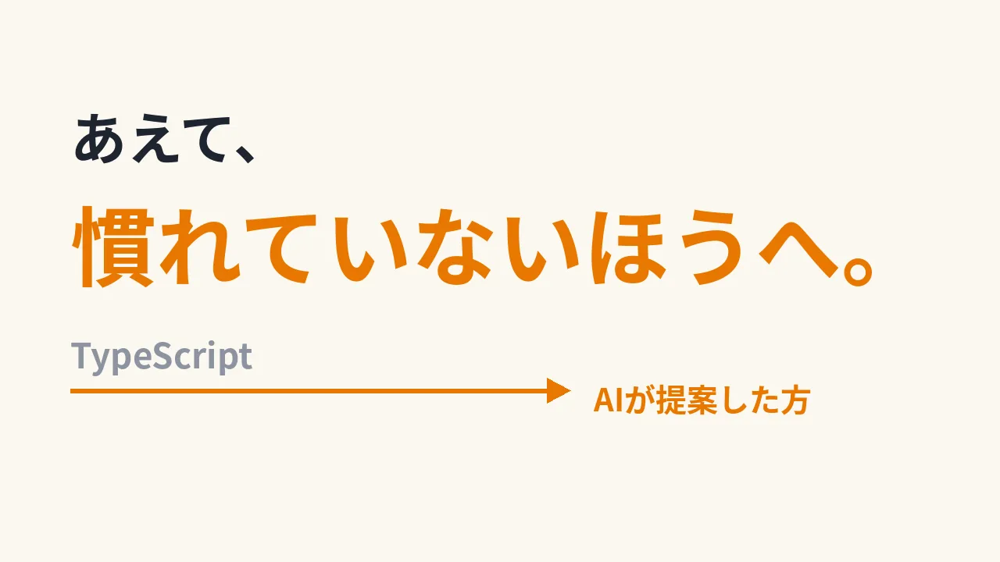

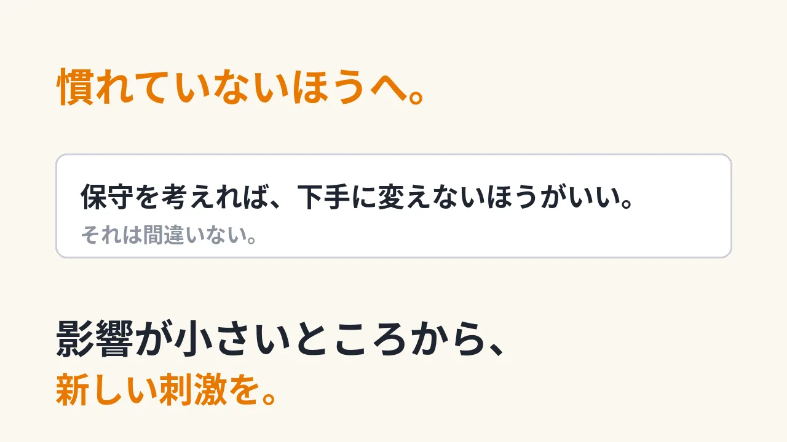
あえて、
慣れていないほうへ。
TypeScript
AIが提案した方
保守を考えれば、下手に変えないほうがいい。
それは間違いない。
影響が小さいところから、
新しい刺激を。
最近は、あえて慣れていないほうを選ぶこともあります。メンテナビリティを考えれば、下手に変えないほうがいい。それでも、影響が小さいところから新しい刺激を取り込んでいく。
声 83字 ／ 画面 81字
はじめ：左寄せの大見出し（重心は左上）。おわり：上下 3 段、中央に札（重心は中央）。
矢印が伸びる勢いで画面全体が Tilt down し、留保の札が下から押し上がって中央に止まる。札を読む間は札ごと奥へわずかに Dolly out、最後の 2 行は行ごとに逆向きの流れ（s22・傾けない）で入る。
留保を「読める形」で残す。小さな注記にしない。「TypeScript」は原稿の「JavaScript/TypeScript」を短縮した表記。
これで良いですか？
0:46–0:54 / 約8秒 ・ 山場の問い（AIの問い）

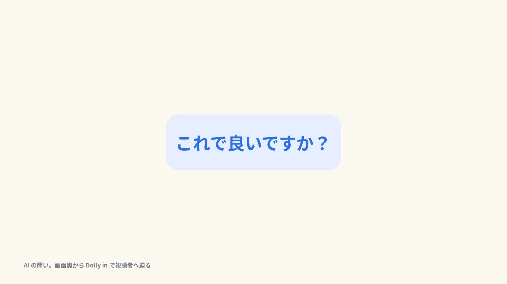

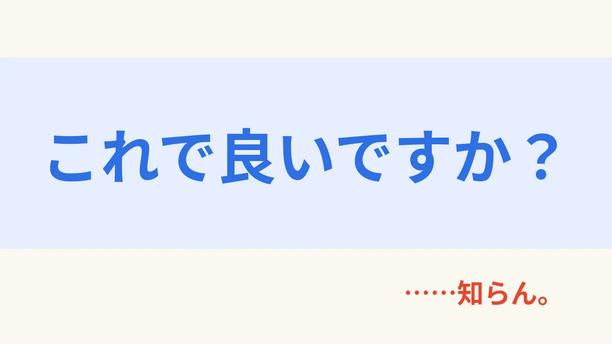
これで良いですか？
……知らん。
AIに作らせると、「これで良いですか？」と聞かれる。……知らんじゃないですか。
声 39字 ／ 画面 15字
はじめ：中央の小さな点。おわり：横長の帯が全面を占める。
吹き出しが奥から視聴者へ Dolly in で迫る（加速、最後は安全域の手前で止める）。止まった瞬間、朱の「……知らん。」が右下から叩き込まれ、画面全体が小さく後ずさる（押し戻し）。
青＝AI の声。結論ではなく途中の問いとして中盤に置き、07〜10 で本人の答えへつなぐ。
爆速でできても、恐怖も爆速でやってくる。
0:54–1:04 / 約10秒 ・ 核心（恐怖）★素材動画

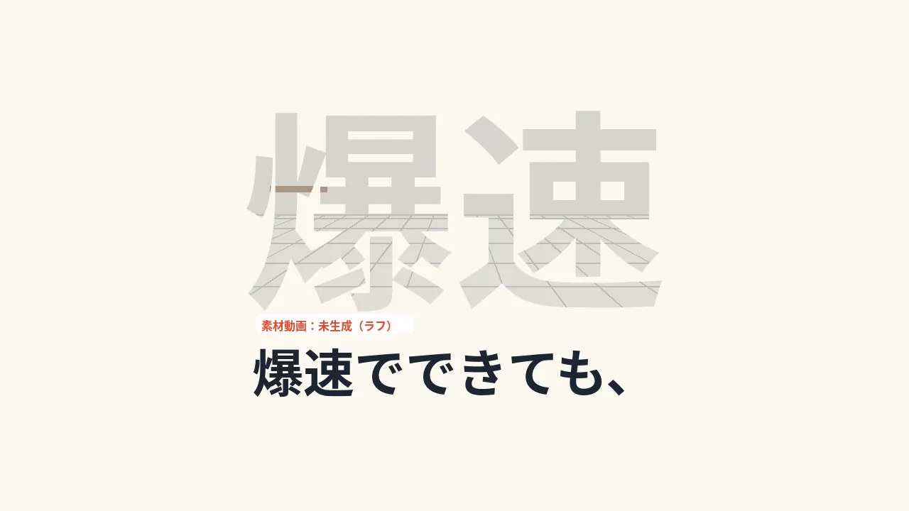

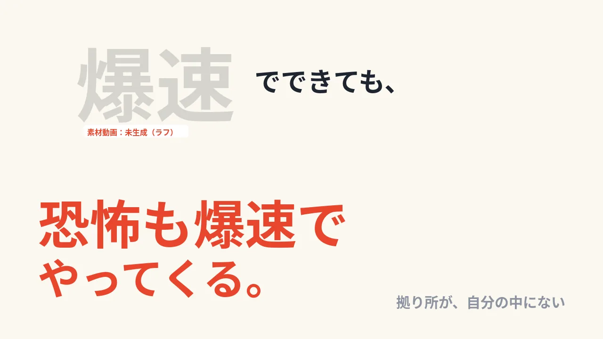
爆速
でできても、
恐怖も爆速で
やってくる。
拠り所が、自分の中にない
作業そのものは爆速でできるようになりました。でも、恐怖も爆速でやってくる。出てきたものが合っているかの拠り所が、自分の中にないからです。
声 68字 ／ 画面 32字
はじめ：中央の巨大 2 字（字の形の窓）。おわり：左上の小窓＋左下の大きな朱 2 行（重心は左下）。
「爆速」の字の中で素材の床が前へ流れる（s18）。字の窓ごと左上へ吹き飛ぶように縮み、同じ速さで朱の 2 行が反対側から入る（速さを恐怖へ受け渡す）。読む間は 2 行を逆向きにゆっくり流す。
素材動画 F2 を使う。朱＝恐怖・責任。
だから、調べる。
1:04–1:14 / 約10秒 ・ 行動（調べる・学ぶ）

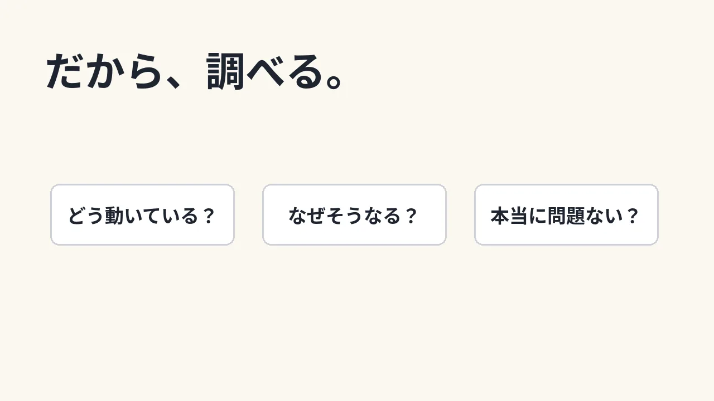

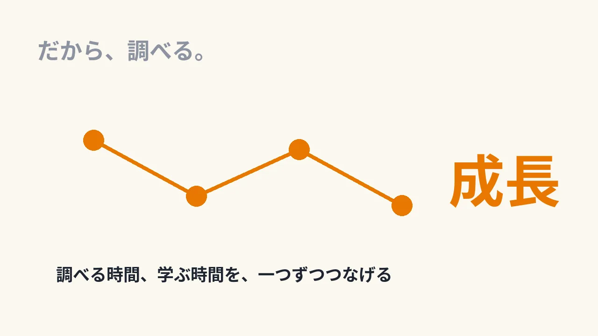
だから、調べる。
どう動いている？
なぜそうなる？
本当に問題ない？
成長
調べる時間、学ぶ時間を、一つずつつなげる
だから調べます。どう動いているのか。なぜそうなるのか。本当に問題ないのか。調べる時間、学ぶ時間を一つずつつなげていくことが、成長につながります。
声 72字 ／ 画面 53字
はじめ：横一列の 3 札（均等）。おわり：左下から右上へ上がる折れ線（斜めの重心）。
札が順に叩き込まれ（s16 の強い語の入り）、最後の札が入った瞬間に 3 枚が点へ縮んで線が左から描かれる（s12）。カメラは線を追って右へ Truck し、「成長」で Push in。
橙の点と線＝自分でつないだ学び。
頭を使う場所が、移った。
1:14–1:23 / 約9秒 ・ 主張（一文）

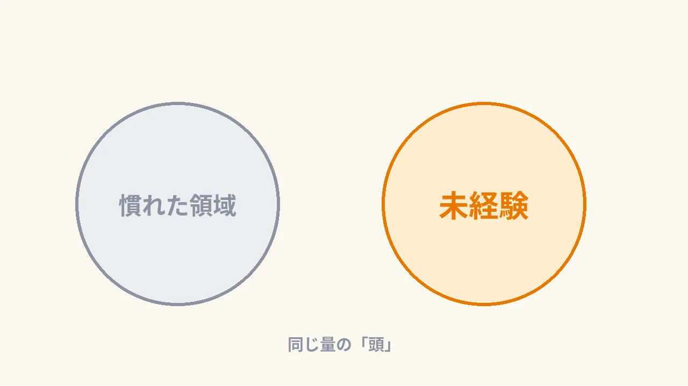

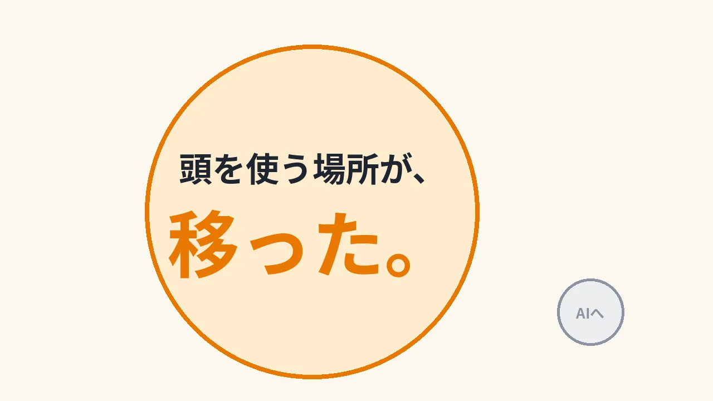
慣れた領域
未経験
同じ量の「頭」
AIへ
頭を使う場所が、
移った。
頭を使わなくなったのではありません。頭を使う場所が、移ったのです。
声 33字 ／ 画面 30字
はじめ：左右対称の 2 円。おわり：中央の大円と隅の小円の非対称。
2 円が入れ替わるように回り込み（画面全体を中心に 1/4 回転）、灰は奥へ、橙は手前へ。中の語は行マスクで差し替わる。止まらず 10 の窓へ Push in。
03・04 の 2 円の帰結を比較として見せる。円は平面（3D は使わない）。
怖いですよ。でも、頭を使うのはめちゃくちゃ楽しい。
1:23–1:32 / 約9秒 ・ 結論（本人の肯定）★素材動画

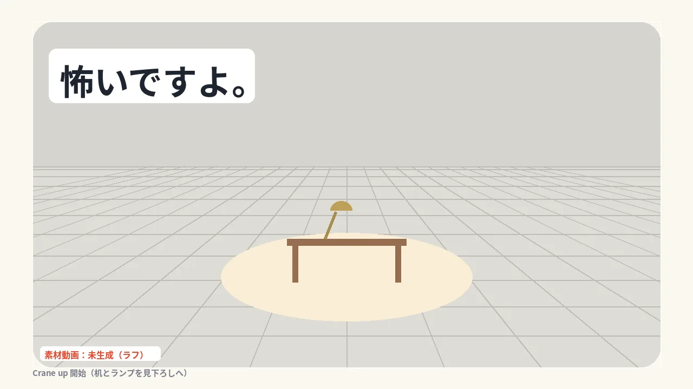

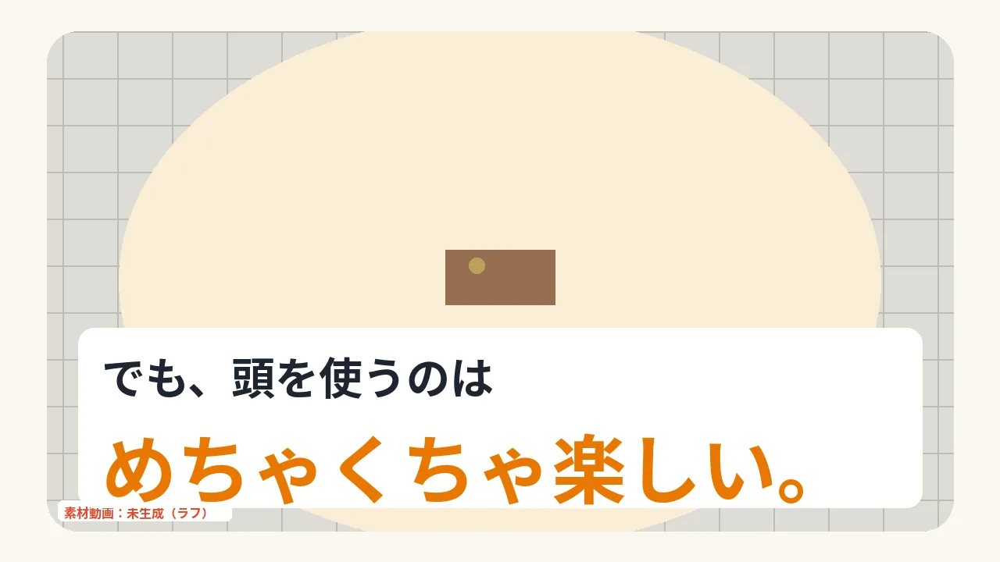
怖いですよ。
でも、頭を使うのは
めちゃくちゃ楽しい。
怖いですよ。でも、頭を使うのはめちゃくちゃ楽しいです。
声 27字 ／ 画面 25字
はじめ：窓が主、文字は左上に小さく。おわり：下 1/3 の札に大きな 2 行（重心は下）。
「怖いですよ。」は札ごと上へ押し出され、Crane up と逆向きに「でも、」以下が下から行マスクで入る。最後の 1 秒は窓全体を軽く Push in し、橙の語を残したままライムの面がワイプして 11 へ。
素材動画 F3 を使う。作品は本人の肯定で閉じる。
エンドロゴ
1:32–1:37 / 約5秒 ・ 制作表示


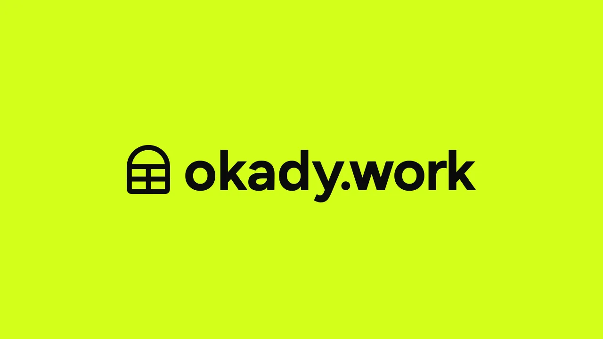
（ロゴのみ）
なし
声 0字 ／ 画面 0字
ロゴのみ。
10 からライムの面がワイプで全面を塗る。ロゴは SVG の CSS アニメーション（0〜2.6秒 o の落下とバウンド、2.6〜3.2秒 左へスライド、3.0〜4.0秒「.work」が一文字ずつ）をフレーム時刻から再現し、完成後 1〜1.5 秒保持。
ロゴの形・色・比率は変えない。ロゴ以外の文字は載せない。
採用動画素材（3本）
assets/footage/ に保存。動画はGit管理外のため、別環境へはZIPを渡す。| カット・実ファイル | 役割と合成 | 使用区間（素材内） | 実尺 |
|---|---|---|---|
04｜未経験の領域へassets/footage/cut04-lamp-floor-tiles.mp4 | 橙の縁の「未経験」の円で切り抜く。机と点灯の広がりを中心に入れ、右の円から紙色の余白40pxを残す大窓へ拡大。白い札の5語を上に重ねる。 | 0.75–7.75秒（7秒） | 8.042秒 |
07｜爆速と足元の不安assets/footage/cut07-tiles-rush.mp4 | 「爆速」の字形で切り抜く。素材の下寄りの床を中心に使用し、机・ランプは字の外へ切り取る。中央の暖色の道と床の継ぎ目が字形の中で流れるよう配置。字の外は紙色。 | 1.5–5.5秒（4秒） | 6.042秒 |
10｜明るくなった床の広がりassets/footage/cut10-lit-floor-crane.mp4 | 左右60px・上下40pxの紙色を残した角丸の大窓。机と広がる床を残し、白い札は左上から下1/3へ受け渡す。 | 0–8秒（8秒） | 8.042秒 |
未経験の領域へ
カット04／素材内 0.75–7.75秒を使用
タイルが段階的に点灯し、カメラが上昇する。机とランプの形状を維持。
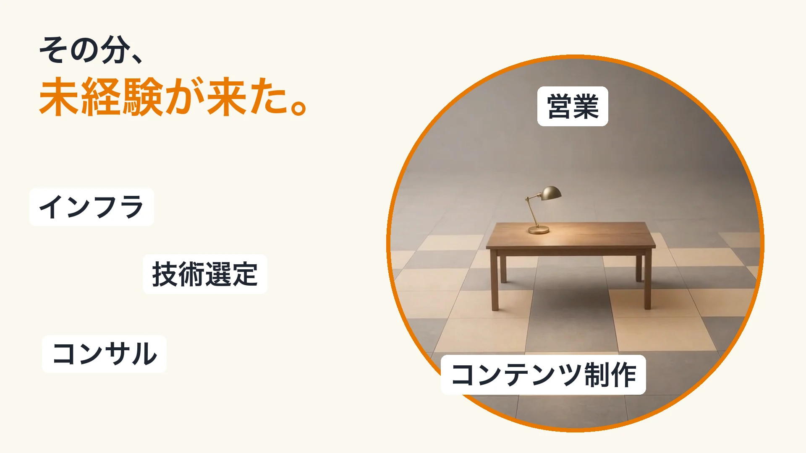
色合わせの基準：共通参照画像。生成原本は assets/footage/cut04-lamp-floor-tiles_grok_t1.mp4。制作では上記の音声なし採用版を使用。

爆速と足元の不安
カット07／素材内 1.5–5.5秒を使用
前進につれて床の継ぎ目が流れる。中央の暖色の床を字形に入れ、机とランプは切り取りで避ける。
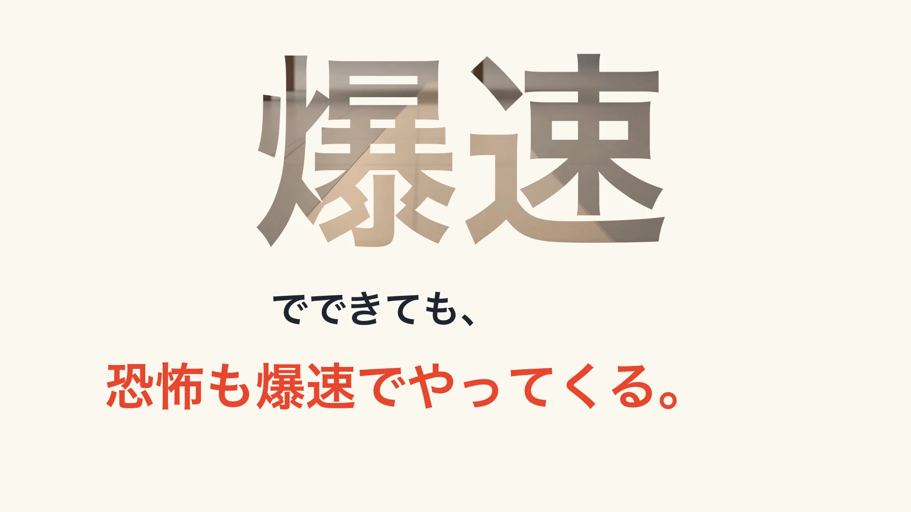
色合わせの基準：共通参照画像。生成原本は assets/footage/cut07-tiles-rush_grok_t1.mp4。制作では上記の音声なし採用版を使用。
明るくなった床の広がり
カット10／素材内 0–8秒を使用
机から上昇し、最後は参照画像に近い見下ろし。明るい床の広がりを維持。
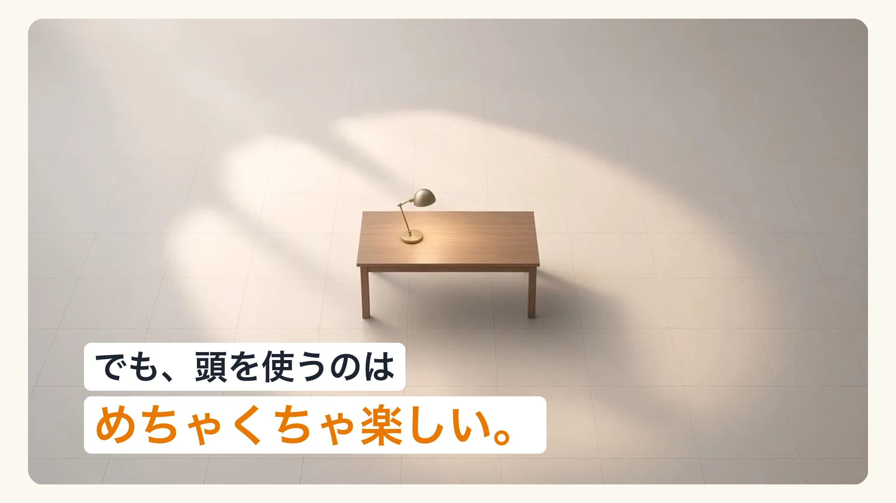
色合わせの基準：共通参照画像。生成原本は assets/footage/cut10-lit-floor-crane_grok_t1.mp4。制作では上記の音声なし採用版を使用。
一般的なAI生成イメージであり、筆者の実際の仕事場の記録ではない。3素材のデコード、等速再生のサンプル画面、連続コマ、最終表示サイズでの文字との静止合成を確認。完成本編の動き・音との同期は制作側で確認する。生成設定・原本・費用の確認状況は 生成記録へ分離。
音（BGM・効果音・ナレーション）
完成条件
- 01→02 と 09→10 だけで主張と結論が伝わる。結論は 10 の本人の肯定で閉じる。
- 03・05 の留保が読める大きさ・時間で残る。
- 全編で画面全体が動き続け、静止画の切替に戻らない。文字の形は崩さず、行・塊・層・カメラで動かす。
- 素材動画は窓の中で明るい紙面となじみ、3 本が同じ部屋に見える。
- 文字のはみ出し・重なりの機械検査を通している（制作側）。絵コンテの文字は企画側で安全域（左右56px・上下36px）内を確認済み。
- エンドロゴは仕様どおり（ライム全面・中央・アニメーション再現・保持）。
- 等速での再生確認は未確認（書き出し前のため）。冒頭・中盤（06–07）・後半（10–11）を等速で確認して報告する。
参照：references.md（主張・根拠・留保と画面の文言の対応）／effects-direction.md（NANKA DEKIRU の検討記録）